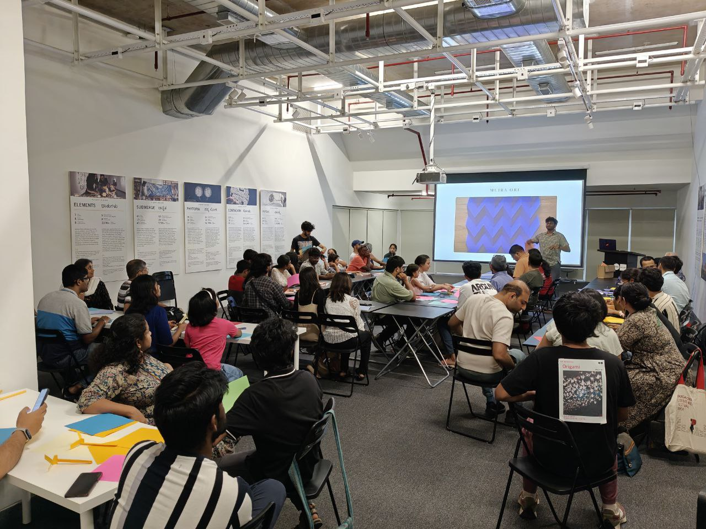
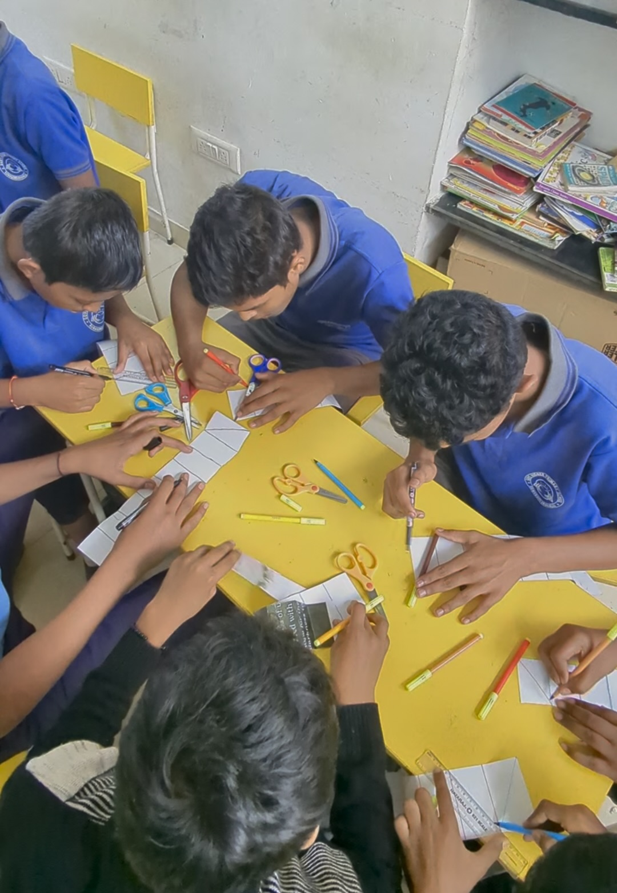

Origami × Nature


The bridge: Bridging human and non-human intelligence through making. Using the art of origami as a way to observe, understand, and appreciate the ingenuity embedded in natural structures.
Participants observed patterns and forms in nature, then translated those observations into folded paper — working through spirals, tessellations, and flight mechanics with their hands. By understanding how and why natural structures such as insect wings and leaves fold, we explored how shape, function, and movement can emerge from simple rules, experimenting with multiple folding approaches along the way. Origami became a way to notice how nature uses the principles of folding to solve complex problems, elegantly.